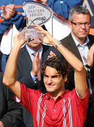

07.07.07
Posted in sports, tennis at 12:46 am by danvk
I took some grief for writing too much about the French Open, so I’ve avoided saying anything about the last two weeks at Wimbledon. I get one post though, right?
The main story has been rain. It’s been so wet that Nadal wound up needing five days to finish his third-round match against Robin Soderling. The tournament got way behind schedule, so many players have been playing on back to back to back days. Men’s quarters were today, men’s semis are tomorrow, and the finals are the next day.
That makes for some really tired players, so we’ve been getting a few surprise results. A lot of matches have been one-sided at the beginning, then a player gets tired or hurt, and the match suddenly reverses. That’s what happened to Andy Roddick today. He was up two sets and a break on Richard Gasquet, but wound up losing a 6-4, 6-4, 7-6, 7-6, 8-6 marathon. NBC must be all kinds of pissed. Instead of getting a marquee matchup with an American, Andy Roddick vs. Roger Federer, they get a lopsided matchup with a player nobody’s heard of. Remember the tight schedules? After playing a four hour slugfest than finished after 8 PM, Gasquet has to wake up tomorrow morning and play Roger Federer at noon. It’s going to be a blowout.
The women’s final is also going to be a blowout. Venus Williams has been playing out of her mind, and Marion Bartoli (who upset Justine Henin today) has never played in a Grand Slam final before. There’s a fine tradition of choking in your Grand Slam final debut on the women’s tour. See Anna Ivanovic and Justine herself for reference. Expect more of that tomorrow.
The one interesting match is the Nadal vs. Djokovic semi. These guys will both be exhausted. They’ve both played several days in a row and had a few five-setters. I’m picking Nadal in five, but I’ll be rooting for Djokovic.
Another random note: Bud Collins, the veteran NBC tennis commentator, is retiring. Good riddance. This guy is like the Dick Vitale of tennis. Nobody likes him. His role now is mostly to do cringe-inducing post-match interviews with the champions. A sampler: Bud: “On clay, Rafa is el Rey!” Nadal: “hehehe, ahhmm” (awkwardly looks for anyone else to talk to). Way to go, Bud.
Update: An update doesn’t break my one-post limit, does it? I called all three matches correctly. Venus and Fed rolled, and Nadal won. I called five sets, but it only went three. Djokovic hurt his foot and had to retire in the third set, tied at one set apiece, presumably on its way to a thrilling fifth. =) I’m picking Fed in four tomorrow. The final is on NBC at 9 AM EST/6 AM PST.
Permalink
06.10.07
Posted in sports, tennis at 9:53 am by danvk
Nadal played well in the French Open final, but Roger mostly beat himself. The key statistic: Federer won on only one out of 16 break point chances. Ten of those were in the first set, which he really should have won. Roger must be all kinds of pissed. He refused post-match interviews.
With three convincing losses to Rafa in the last three French Opens, you’ve got to wonder whether Roger can ever pull it off.
In other, unrelated sports news, congrats to the Rice Owls on making the College World Series again. I regret not going to Omaha to cheer them a year ago. Hopefully they can do it this time!
Permalink
06.04.07
Posted in tennis at 8:38 pm by danvk
Four rounds into the French Open, we’re still on track for my dream final of Federer vs. Nadal. Nobody’s played spoiler to either yet. In fact, nobody’s even taken a set off either of them. That gives Fed a pretty impressive streak: he’s won 35 straight sets at Grand Slams. The statisticians went scurrying, but I believe this really is a genuine record.
The big match for the women tomorrow is Serena Williams vs. Justine Henin. Henin’s won two French Opens in a row, but Serena won the Australian this year and is on a hot streak. I’m rooting for Serena. She’s the last American left (all nine American men lost in the opening round) and, quite frankly, Justine is a jerk. They had an incident at the 2003 French Open that was rather revealing. Henin raised her hand to stop the point while Serena was in her service motion. She served it into the net as a courtesy, but the chair ump hadn’t seen the hand. He called it a fault. Serena argued, and Justine refused to step in and say she’d raised her hand. The winner of this match will be the favorite to win the title.
There are some really fun looking matches on the men’s side as well. Guillermo Cañas is back from a doping suspension and has been on a tear. He beat Federer twice earlier this year, and they’re on track for a semifinal matchup. That would be a spectacularly interesting match. I’d still pick Federer, but unlike so many other players, Canas will have confidence that he can beat Fed. Nadal’s half of the draw should be easier, though Novak Đoković has been playing very well.
Update: Three out of four ain’t bad. I got Fed, Nadal and Djokovic, but missed Davydenko, who beat Canas in straight sets. I’ll be very surprised if I don’t get my final.
Permalink
06.03.07
Posted in sports, tennis at 3:50 pm by danvk


How did I not know this? Joakim Noah, from Florida’s back-to-back championship basketball teams, is the son of Yannick Noah, the winner of the 1983 French Open. Crazy. (from this article)
Permalink
05.23.07
Posted in tennis at 8:35 pm by danvk
Apparently there’s a big gaping hole in my RSS subscriptions. Roger Federer beats Rafael Nadal on clay and it takes me three whole days to notice?
This is kind of a big deal. Nadal hadn’t lost on clay in over two years, the past 81 matches. Federer was 0-5 against Nadal on clay before this match. And that’s a record that mattered, since the biggest clay-court tournament, the French Open, is coming up in four days. If Federer can win the French, he’ll have pulled off tennis’s greatest feat, a Grand Slam, something no man has done since Rod Laver in 1969.
The French is definitely the most exciting Grand Slam tournament these days, since it’s the only one that Fed isn’t expected to win in a rout. I woke up at 5 AM to watch the final last year, and it was phenomenal. Nadal was up two sets to one and a break, and it seemed as though it might just end there. But Fed kicked it up a notch, won some absurd points to force a tie-break, and for a moment, it looked like he just might pull it off. But all to no avail. Nadal took him out 7-4 in the tiebreak.
You’ve got to give Nadal some serious credit. He’s the only reason that Federer hasn’t won eight slams in a row, and 12 of the last 13. That’s some kind of pressure, but he’s never withered under it in the past. Mark your calendar, the French Open starts on Sunday, and the men’s final is on Sunday, June 10. I’ll be tremendously disappointed if it’s not a rematch of last year’s.
Permalink
« Previous Page — « Previous entries
Next entries » — Next Page »